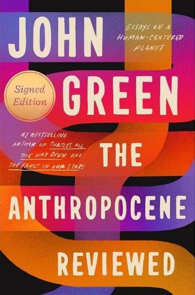
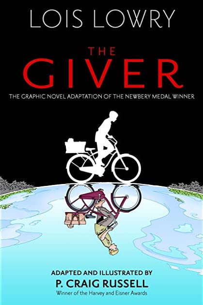
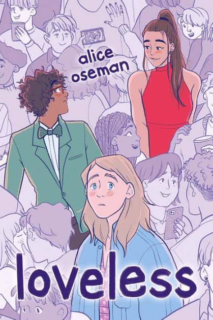
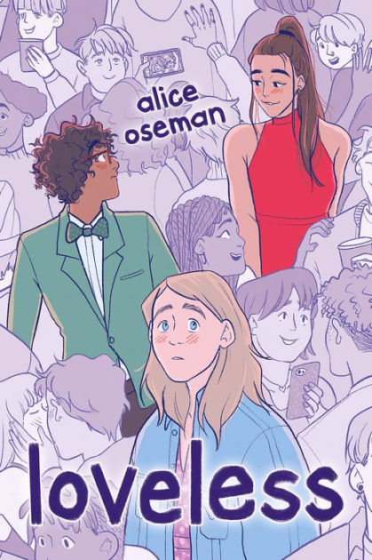

The Books
Of the books I've read so far this year, these are five of my favorites in no particular order. This year, I'm pleased to have read a greater diversity of types of books — that is, while I typically read exclusively young adult or graphic novels, I am reading much more nonfiction this year. I rated each book on a five-star scale, going to quarter stars if needed.
Here are five of the best books I've read in 2022 (so far), with links to each book's page on Goodreads:
  
 
- The Anthropocene Reviewed: Essays on a Human-Centered Planet, by John Green (4.5 out of 5 stars)
- The Giver: The Graphic Novel, adapted and illustrated by P. Craig Russell (4.5 out of 5 stars)
- When Breath Becomes Air, by Paul Kalanithi (4 out of 5 stars)
- Loveless, by Alice Oseman (4.5 out of 5 stars)
- We Are Never Meeting in Real Life, by Samantha Irby (4.25 out of 5 stars)